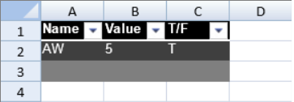

You can display data in a table in the control. The table has options to filter or sort the data.

The default table style is medium2.
You can control whether to display the table header and footer by setting the showHeader and showFooter methods. You can control whether to highlight the first or last column by setting the highlightFirstColumn or highlightLastColumn method. You can control whether to show banded rows and columns by setting the bandRows or bandColumns method. You can customize the table style with the TableStyle class, headerRowStyle method, and the footerRowStyle method. You can set the header cell text and the footer cell text and formula.
The row count for the table includes the header and footer rows. Tables support frozen rows and columns, sparklines, and cell spans.
The following example creates a table and sets the table style.
| JavaScript |
Copy Code
|
|---|---|
activeSheet.tables.add("Table1", 0, 0, 3, 3, GC.Spread.Sheets.Tables.TableThemes.dark1); activeSheet.getCell(0,0).text("Name"); activeSheet.getCell(0,1).text("Value"); activeSheet.getCell(0,2).text("T/F"); activeSheet.getCell(1,0).text("AW"); activeSheet.getCell(1,1).text("5"); activeSheet.getCell(1,2).text("T"); |
|